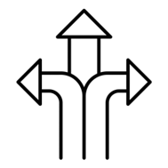

Beneficios del Cableado Estructurado
Permite organizar y optimizar la transmisión de voz, datos y video de manera eficiente. Gracias a sus estándares de instalación, facilita el mantenimiento, reduce fallos de conexión y mejora el rendimiento general de la red. Además, al emplear componentes normalizados, las organizaciones pueden expandir o actualizar sus sistemas sin realizar modificaciones complejas, garantizando estabilidad y una mejor administración de los recursos tecnológicos.
Eficiencia
Capacidad de unificar datos, voz, video y sistemas de seguridad bajo un mismo tipo de cable y conector, simplificando la conectividad de la empresa.
Escalabilidad
Capacidad de expandir y actualizar la infraestructura de red de forma sencilla a medida que los requerimientos y el tamaño de la organización crezcan.

Flexibilidad
Diseñada como una estructura única y adaptable a cualquier cambio tecnológico o de mobiliario, sin necesidad de alterar la infraestructura física existente.